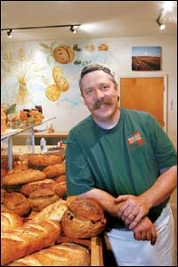
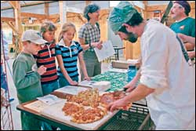
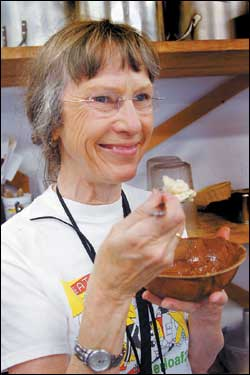
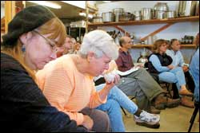
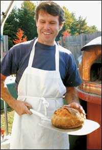
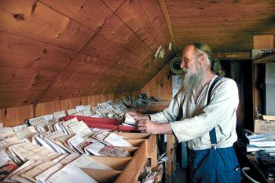
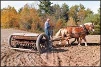
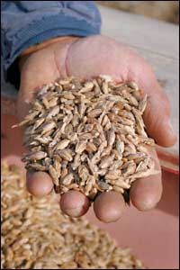

Issue # 208 - February/March 2005
This is the second part of our series about whole-grain breads. Part I, “Why Whole Wheat is Way Better,” appeared in the December/January 2005 issue. - Mother
Two hundred years ago in Maine, a farmer pulling his wagon up to the local gristmill was a common sight. Sweaty horses were tethered as sacks of wheat, barley, corn and rye were unloaded, ready to be ground into flour and meal.
In those days, grain growing was an integral part of a diversified farming strategy in the Northeast. By 1825, most small New England farms were growing grain for human consumption, and more than 15,000 small mills were scattered throughout Maine, Vermont, New Hampshire and New York. Powered by rivers and tides, these gristmills were a vital part of a regionally self-sufficient food system, as were numerous locally adapted grain varieties. Many of these grain varieties are now extinct or endangered, and today, nearly all the grain consumed in Maine comes from afar. But a few intrepid souls are out to change that, as I discovered at this fall’s Maine Food Festival hosted by the Maine Organic Farmers and Gardeners Association (MOFGA), in Unity.
Grains were the festival’s focus, and the first “grain activist” I met was Jim Amaral of Borealis Breads. He was proudly displaying a selection of gorgeous, hearty loaves from his pioneering bakery. I’ve eaten Borealis “Aroostook Wheat” for years and find it in a class by itself when compared to any other bread, locally made or not. I’m an avid supporter of locally grown foods, but, until now, I did not appreciate the full significance of the fact that Amaral’s whole-wheat breads are created with wheat grown right here in Maine.
Amaral told a workshop crowd in the MOFGA kitchen that when he started his bakery, he couldn’t find fresh, locally grown organic wheat. So he set out to find some farmers to grow and mill it for him. “Whole-wheat flour wants to be used fresh to retain its full flavor and nutrition,” he said.
Fortunately, Amaral found Matt Williams, an Aroostook County farmer who was eager to supply whole-wheat flour. After testing and tasting different wheat varieties, they settled on ‘Maxine’ winter wheat, and ‘Grandin’ and ‘AC Walton’ spring wheats. In a leap of faith, Williams organized a group of northern Maine growers and installed grain storage facilities and a 20-inch commercial Meadows grain mill. He now annually supplies Borealis Breads with 60,000 pounds of fresh, organic whole-wheat flour. Williams also supplies whole wheat to other Maine bakeries and recently contracted to grow 25 acres of organic oats for Grandy Oats, a granola maker in Brownfield, Maine. Aaron Anker of Grandy Oats said he is excited to develop a new product with all Maine-grown ingredients in an effort to support local growers and build on the local foods movement.
“What we’re trying to do is create a loaf that tastes like Maine,” Amaral explained after artfully scoring six loaves with a razor to release the pressure and to create interesting shapes and textures before he popped them into a wood-fired oven.
As Amaral talked, I realized why he places so much emphasis on flour quality. It turns out that there’s nothing in this loaf but wheat, water and salt! He showed us how to make a sourdough starter by simply mixing some flour with water to form a baseball-sized lump, which he had buried in a pail of flour to let ferment for a few days. When he was ready to bake, Amaral blended more flour, water and salt with the starter, and set the mix to knead in a mechanical mixer with a dough hook.
Halfway through the kneading, Amaral showed us how the gluten begins to develop. After eight to 10 minutes, the dough, which had become quite supple and stretchy, was removed. By this time, the loaves in the oven were ready to come out, and the eager participants scooped up the fresh dough to take home and bake.
After retrieving the finished loaves, Amaral said, “It’s time to break bread.” He tore apart the still-hot loaves and passed the steaming chunks around the room to a cacophony of “umms,” “oohs” and “aahs.” Everywhere I looked, foodies were cradling chunks of manna - eyes closed, inhaling the aroma. Slowly we began to eat. The flavor was truly remarkable. “It’s so alive,” one taster said. Another noted the contrast between the firm, crisp crust and the chewy interior. Many of us just moaned and nodded in agreement. Adjectives like “amazing,” “earthy,” “incredible” and “delicious” began to rise above the initial nonverbal utterances.
As I reminded myself that this almost primal food is just flour, water and a touch of salt, I began to understand why Amaral had gone to such great lengths to entice local farmers to grow his wheat: Great food comes from great ingredients. In his quest for the perfect loaf, Amaral has sponsored field trials to find more flavorful wheat varieties that will perform in Maine’s climate and soils, and that will display superior baking characteristics. I was not surprised when Amaral told me he was off to Italy the next day, to attend the annual International Slow Food Convention. It doesn’t get much “slower” than his bread: a profound gastronomic experience from essentially a single ingredient, carefully grown and lovingly prepared.
As I continued to savor the bread and observe the delighted crowd, connected in a kind of communal sensory nirvana, I noticed one couple in particular, Carol Brownson and Paul Wermer. Later, in the main festival area, I ran into them again. A small crowd had gathered to sample an array of grain-related, Maine-made treats. These included freshly baked pizzas made with local wheat, flavorful heritage breads from the Portland Baking Co. and little pancakes called “ployes,” made by the Bouchard Family Farm.
Brownson and Wermer had come to the festival all the way from San Francisco, arguably the food capital of the West. “I never thought my taste buds would become so political!” Brownson said. She explained it all started when she set out to make a jam that matched the flavor of her childhood memories and found a grower of her treasured Blenheim apricots. “Now I’m caught up in this political movement to support local farmers so I can make my jam and assure that my favorite apricot is not replaced by the tasteless agribusiness substitute,” she said. This trip to the Maine Food Festival, she said, was part of her quest to create bread that could live up to the quality of that homemade jam.
“What’s in real bread?” she asked rhetorically. “Flour, water, salt … Where does the flavor come from? Flour! Where does your flour come from? Here’s this stuff in the supermarket, and it doesn’t tell you a thing about where it comes from, but some of it makes good bread and some of it doesn’t. So I’m here to meet these guys who grow flour and see what they’re growing, and to find out if it has any flavor.”
Wermer added that in all the literature he has read from the wheat industry, the issue of flavor is never discussed as a desirable characteristic for wheat varieties.
A short time later I found myself with Brownson and Wermer back in the MOFGA kitchen for a discussion about corn with chef Sam Hayward from the Fore Street Restaurant in Portland, Maine. Fore Street, considered one of the finest eateries in New England, places great emphasis on freshly prepared local foods. To no one’s surprise, Hayward’s discussion centered on the difference between commercially available packaged cornmeals and those ground fresh from his favorite regionally grown varieties.
Hayward produced large skillets, each with a few handfuls of dry cornmeal that he heated to release the aroma. We all circulated around the counter, inhaling the s cents wafting from the skillets. To my nose, the store-bought meal smelled more like the cardboard box it was packed in than the distinctive corn flavors of the freshly ground local varieties.
The unanimous choice for best corn aroma was Hayward’s treasured ‘Rhode Island White Cap’ flint corn. An essential ingredient in the classic Rhode Island johnny cakes, this heirloom variety is reported to attain its full flavor potential only in the soils of Rhode Island, where it has been grown for generations.
We all were impressed with the ‘White Cap,’ but Hayward expressed a bit of disappointment, explaining he had taken the meal out of his cooler the previous day and, being especially ephemeral, it had clearly lost its full flavor. “The more I work with corns with a terroir [a specific flavor or character that comes from the unique climate and growing conditions of a particular region], the more I’d like to have my own stone mill in my kitchen,” he said. “Ideally, I’d keep the whole-kernel corn in a cool, dark place and mill it just before using it.”
With the “not-so-fresh” ‘White Cap,’ Hayward proceeded to make a corn gruel he calls hasty pudding that expresses the essence of corn in an extraordinary way. Wermer tried to describe the taste: “I love that there are so many complex flavors that you just can’t name.”
Grains for self sufficiency
Next I talked with Will Bonsall, director of the Scatter Seed Project and an avid promoter of home-scale grain production. Bonsall said the demise of the Maine wheat industry began in the mid-1820s when cheap “Genesee wheat” first was imported from New York via the newly opened Erie Canal. The effect on the local economy was so severe that in 1828 and 1829, the state of Maine created a subsidy for wheat growers to counteract the imports.
What was remarkable, Bonsall said, was not the subsidy itself, but the fact that in every town, records were kept in so-called “bounty books” of how much wheat was being grown and the specific varieties. “And in the two years that they had the bounty books in Maine, one word popped up again and again and again - ‘Banner,’” he said.
‘Banner’ is a variety of hard red spring wheat, Bonsall said, that just may be better adapted to our climate than anything out there today. That’s because most of the wheat varieties being grown in Aroostook County right now were bred for conditions in Minnesota or North Dakota.
After years of searching for ‘Banner,’ Bonsall recently discovered it in a collection in England. He has sent for a small sample of seed to grow in his extensive gardens at Industry, Maine.
He said he is not sure if it’s the same historic variety, but he’s eager to see how it performs and perhaps will add it to the scores of grain varieties that he maintains. “Sometimes these things are disappointing,” he said, “but sometimes it’s very surprising and something like this does really well.”
For the home grain grower in New England, he suggested a few of his favorites: ‘Albos’ winter rye, ‘Terra’ or ‘Torch River’ hulless oats, ‘Burbank,’ ‘Leonessa’ and ‘Lompoc’ hulless barley, and ‘Rough Rider’ or ‘Servinta’ wheat. (Most of these grains are available through Seed Savers Exchange.)
“It’s not hard for home gardeners to grow a bushel of wheat, or hulless barley or oats,” Bonsall said. “You can’t really talk about food self sufficiency without looking at small grains.”
One Family’s Grain Revival
After speaking with Bonsall, and with my Food Festival experience still fresh in my mind, I was convinced that local grain not only made sense from a culinary perspective but would ultimately help reduce the environmentally destructive practice of shipping foods over long distances. With that in mind, and a new grain mill in my kitchen, I set out to find a local grain grower. I didn’t have to look far to find the Webb Family Farm in Pittston, Maine, only an hour’s drive from my home.
Don and Kathy Webb, with the help of their two daughters, Don’s father and a stable of workhorses, annually grow nearly 40 acres of organic spelt (a cousin of wheat), as well as wheat and oats. Rather than selling wholesale to a mill, the Webbs decided to add value to their grain through a range of products that they market themselves. Webb Family Farm’s whole-wheat flour, breakfast cereals, puffed wheat, spelt “coffee” and other products are a hit at the local farmer’s market and food co-op, and sell like hot cakes at Maine’s annual Common Ground Fair. As word spreads, Kathy said, they sell more and more from their home where they installed a small commercial-sized flour mill.
Perched on the forecart behind a team of Belgian workhorses, Don said he’s not sure he could afford to farm without his night job as a lineman for the power company, but the passion he exudes for the spelt he is planting with his vintage Ontario grain drill makes it clear he will be planting grain for a long time. From farmers and millers to bakers and chefs, it is clear that Maine’s Real Food Revival is well under way, mirroring a national trend of renewed interest in regional self sufficiency and celebration of the many flavors of our rich food heritage.
Scott Vlaun grows and savors fresh food in Otisfield, Maine, where he photographs and writes for the Seeds of Change organic seed catalog and Web site.
Lifeless or Lively -
It’s your Choice ...
In December/January 2005, our article “Why Whole Wheat is Way Better” explained how to get the freshest and most flavorful flour by grinding your own at home. There also are a few companies (listed below) that offer all-natural flours that are almost as good as homemade.
Tod Bramble, grain scientist and an employee-owner of the King Arthur Flour Co. in Norwich, Vt., told us the most important practice that sets companies such as his apart from larger flour manufacturers is what they don’t do during the milling process. Most large manufacturers add benzoyl peroxide or chlorine dioxide to chemically whiten (bleach) their flours. Some add potassium bromate to artificially strengthen their flours. Potassium bromate is a suspected carcinogen banned from food products in Europe and Canada. In California, food that contains potassium bromate must bear a warning label.
“It’s a mystery to me why anyone wants white-paint colored flour,” Bramble says. Bleach, he says, is basically a holdover from years ago, when it was a status symbol to eat white flour.
“Bleached flour is fairly lifeless flour,” he says. “It’s definitely less flavorful. I cannot fathom why anyone would choose treated flour.” There is a vast difference between whole-wheat flour and white flour, Bramble says. Whole-wheat flour contains the whole berry, which includes the fiber-rich bran and the germ, which is loaded with oils, minerals, vitamins and enzymes, making it a wonderful source of nutrition. But it will go rancid fast, he says, so whether you mill your own or use pre-packaged flours or mixes, keep whole-wheat products dry and cool to preserve their freshness. White flour, bleached or unbleached, does not contain the bran or the wheat germ and therefore has a longer shelf life. “It’s fairly inert. It has no bran, therefore no fiber,” Bramble says.
“Bran is what gives both flavor and nutrition to the flour. When you look at the fiber and carb levels of each, you’ll find 1 cup of whole wheat has less carbs than white.”
Bramble says how a certain flour will behave during baking depends on the growing season, the characteristics of the wheat and the milling process.
“We are motivated by the fact that wheat is a natural product that is subject to broad environmental conditions,” he says. “It ends up having different characteristics according to whether it was a wet or dry, or a late growing season.” Bramble says King Arthur chooses the highest quality hard red winter wheat varieties for its all-purpose flours and hard red spring wheats for its bread flours for their higher protein content.
In the end, for those looking for the freshest, most nutritious and flavorful flours, milling one’s own is an economical option. But there are also commercial manufacturers that produce flours and mixes naturally and in small enough batches to provide an alternative to over-milled, over-processed flours. Sources for all-natural or organic flour and bread machine mixes are listed below.
- Umut Newbury
|
 Scott Vlaun Jim Amaral of Borealis Breads. |
 Scott Vlaun Freshly baked pizzas made with Maine-grown wheat were a favorite of children of all ages at the Maine Food Festival. |
 Scott Vlaun Carol Brownson of San Francisco tastes hasty pudding made with 'Rhode Island White Cap' corn. |
|
 Scott Vlaun Foodies from all over the country get a whiff of Jim Amaral's fresh sourdough during the cooking demonstrations at the Maine Food Festival. |
 Scott Vlaun Tim Gosnell of the Standard Baking Co. in Portland pulls a steaming loaf of his Five Maine Grain Sourdough from a wood-fired outdoor oven. |
 Scott Vlaun Will Bonsall, director of the Scatter Seed Project, collects, studies and shares rare historic grains such as Maine's 'Banner' wheat. |
|
 Scott Vlaun With the help of his Belgian workhorses and a vintage Ontario grain drill, Don Webb annually grows nearly 40 acres of organic spelt, as well as wheat and oats. |
 Scott Vlaun An ancient type of wheat, spelt is making a comeback with today's discerning bakers due to its light texture. |
|